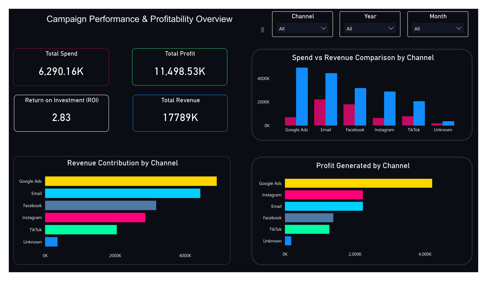
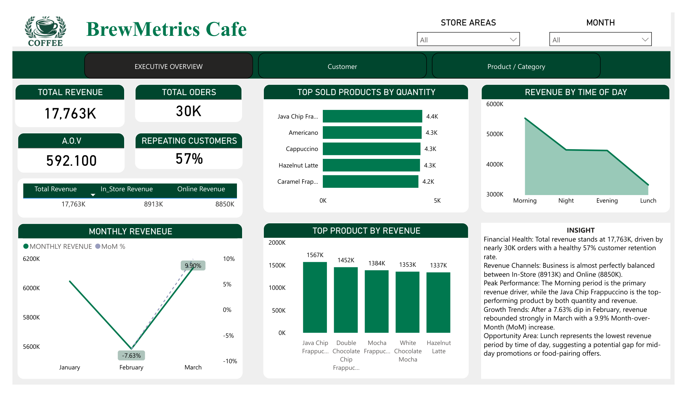

TRIOLOGIX Services helps businesses unlock the power of data through Data Cleaning, Business Intelligence, SQL Analytics, Dashboard Development and actionable insights. We transform complex datasets into clear business decisions.
Dashboards Built
Records Processed
Client Satisfaction
Data Driven Decisions
Helping businesses make smarter decisions using analytics and business intelligence.
TRIOLOGIX Services specializes in Data Analytics, Data Cleaning, Power BI, SQL Reporting and Business Intelligence solutions.
To transform raw business data into meaningful insights that improve revenue, efficiency and decision-making.
End-to-end analytics solutions for modern businesses.
Fix missing values, duplicates, inconsistencies and improve data quality.
Interactive dashboards with KPIs, reports and executive summaries.
Turn complex business data into strategic insights.
Database reporting, optimization and data extraction.
Create compelling charts, reports and visual stories.
Revenue, customer and operational performance tracking.
Real-world analytics projects and dashboards.

Campaign performance analysis including ROI, conversion tracking, CTR performance, CPC monitoring and channel comparison.

Revenue insights, customer retention analysis, product performance, sales trends and operational reporting.
Need a professional dashboard, business report, data cleaning project or analytics solution?
Email: triologix915@outlook.com
Phone: 9870104891